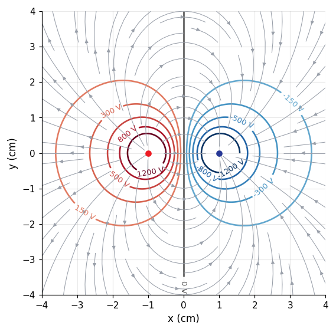
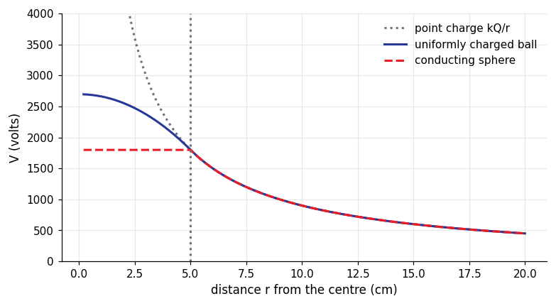

How it is asked: Speed gained across a potential difference; Work to bring a charge closer.
Electric potential energy and work: method and traps
Method
Compute $U$ or $\Delta V$ with the signs of the charges.
Energy conservation $K+U=$ const (no non-electric forces).
Energy to assemble charges: add the pair terms.
Watch out
Positive charges move to lower potential; negative charges to higher.
Electric potential of charge distributions
A point charge has $V=kq/r$ (zero at infinity); potentials of several charges add as numbers.
Key formulas
$V=\dfrac{kq}{r}$, $\ V=\sum\dfrac{kq_i}{r_i}$, ring on axis $\dfrac{kQ}{\sqrt{x^2+R^2}}$, sphere $\dfrac{kQ}{r}$ outside, $\dfrac{kQ}{R}$ on and inside a shell
How it is asked: Potential at the centre of a square of charges; Potential of a sphere.
Electric potential of charge distributions: method and traps
Method
Potential is a scalar: add the signed terms.
Distances from each charge to the point (Pythagoras).
Zero potential ≠ zero field.
Watch out
No vector components for potentials.
Potential, field and equipotential surfaces
$\vec E=-\nabla V$: the field points toward decreasing $V$ and is perpendicular to equipotential surfaces; no work along an equipotential.
Key formulas
$E_x=-\dfrac{dV}{dx}$, $\ \Delta V=-\int\vec E\cdot d\vec s$, uniform field $\Delta V=Ed$, a conductor is an equipotential
How it is asked: Work along an equipotential; Field from a potential graph.
Potential, field and equipotential surfaces: method and traps
Method
From $V(x)$ differentiate to get $E$; from $E$ integrate to get $\Delta V$.
Zero field ⇔ $V$ locally constant.
Work on an equipotential is zero.
Watch out
Field zero does not mean potential zero.
Equipotentials of a dipole and the field they imply

Equipotentials (colour, labelled in volts) are perpendicular to the field lines; the field points from high to low potential. Here $\pm1\,\mathrm{nC}$ at $x=\pm1\,\mathrm{cm}$ and the mid-plane is at $0\,\mathrm{V}$.
Potential of a charged sphere: point charge, insulating ball, conductor

$Q=10\,\mathrm{nC}$, $R=5\,\mathrm{cm}$. Outside, $V=kQ/r$ for all three. A conductor is an equipotential ($kQ/R=1800\,\mathrm{V}$); inside a uniform ball $V=\frac{kQ}{2R}\left(3-r^2/R^2\right)$, reaching $2700\,\mathrm{V}$ at the centre.
Both have the same total charge ($5\,\mathrm{nC}$) and radius ($6\,\mathrm{cm}$). The ring: $V=kQ/\sqrt{z^2+R^2}$. The disk: $V=\frac{\sigma}{2\varepsilon_0}\left(\sqrt{z^2+R^2}-z\right)$. Far away both tend to $kQ/z$; $E_z=-dV/dz$.
For $q_1q_2>0$ (repulsion) $U$ is positive and falls to zero at infinity; for $q_1q_2<0$ (attraction) it is negative: $-U$ is the energy needed to separate the pair. Here $|q_1q_2|=2\times10^{-12}\,\mathrm{C^2}$.
$$U=k\frac{q_1q_2}{r},\qquad F=-\frac{dU}{dr}$$
Practice next
Chapter quizzes Ch. 4 (3 sets)
Practice bank, filtered to this chapter, then written mode
Question analyser: paste a question to see the concepts, formulas and traps
Then the mock exams (Exams page)
Plots and data files
4 plots, each computed from the physical law and checked a second way (numerical integration, an ODE solver, a second formula); the CSV beside each plot holds the numbers behind it, so you can re-plot or fit them. Download all 4 CSV files of this module (zip)
Equipotentials of a dipole and the field they imply Equipotentials (colour, labelled in volts) are perpendicular to the field lines; the field points from high to low potential. Here $\pm1\,\mathrm{nC}$ at $x=\pm1\,\mathrm{cm}$ and the mid-plane is at $0\,\mathrm{V}$. 441 rows · columns: x_m, y_m, V_voltCSVPotential of a charged sphere: point charge, insulating ball, conductor $Q=10\,\mathrm{nC}$, $R=5\,\mathrm{cm}$. Outside, $V=kQ/r$ for all three. A conductor is an equipotential ($kQ/R=1800\,\mathrm{V}$); inside a uniform ball $V=\frac{kQ}{2R}\left(3-r^2/R^2\right)$, reaching $2700\,\mathrm{V}$ at the centre. 397 rows · columns: r_m, V_point_V, V_ball_V, V_conductor_VCSVPotential on the axis of a ring and of a disk Both have the same total charge ($5\,\mathrm{nC}$) and radius ($6\,\mathrm{cm}$). The ring: $V=kQ/\sqrt{z^2+R^2}$. The disk: $V=\frac{\sigma}{2\varepsilon_0}\left(\sqrt{z^2+R^2}-z\right)$. Far away both tend to $kQ/z$; $E_z=-dV/dz$. 301 rows · columns: z_m, V_ring_V, V_disk_VCSVElectric potential energy of two point charges For $q_1q_2>0$ (repulsion) $U$ is positive and falls to zero at infinity; for $q_1q_2<0$ (attraction) it is negative: $-U$ is the energy needed to separate the pair. Here $|q_1q_2|=2\times10^{-12}\,\mathrm{C^2}$. 241 rows · columns: r_m, U_like_J, U_unlike_JCSV
Worked examples from the course problems
Worked example 1 · Electric potential energy (Homework session 3, Q7(b))
The string between spheres A ($5.00\,\mathrm{g}$) and B ($10.0\,\mathrm{g}$), each carrying $5.00\,\mu\mathrm{C}$ and $1.00\,\mathrm{m}$ apart, is cut. What is the acceleration of sphere A at that instant?
Show the answer and the solution
Answer: $45\,\mathrm{m/s^2}$
Coulomb force $F=\dfrac{kq^2}{d^2}=0.225\,\mathrm{N}$ on each sphere.
$a_A=\dfrac{F}{m_A}=\dfrac{0.225}{0.00500}=45.0\,\mathrm{m/s^2}$ and $a_B=22.5\,\mathrm{m/s^2}$.
Worked example 2 · Potential of conductors (Homework session 3, Q8(f))
For the same shells ($R_1=0.500\,\mathrm{m}$ with $2.00\,\mu\mathrm{C}$, $R_2=1.00\,\mathrm{m}$ with $1.00\,\mu\mathrm{C}$), what is the potential at $r=0.700\,\mathrm{m}$, between the shells?
Show the answer and the solution
Answer: $3.47\times10^{4}\,\mathrm{V}$
Between the shells the inner shell acts as a point charge, while the outer shell (all of whose charge is at $R_2>r$) contributes the constant $\dfrac{kq_2}{R_2}$.
$V=\dfrac{kq_1}{r}+\dfrac{kq_2}{R_2}=\dfrac{(8.99\times10^9)(2.00\times10^{-6})}{0.700}+\dfrac{(8.99\times10^9)(1.00\times10^{-6})}{1.00}=2.57\times10^{4}+8.99\times10^{3}=3.47\times10^{4}\,\mathrm{V}$.
Worked example 3 · Potential and field (Homework session 3, Q1)
In a region the electric field has components $E_y=E_z=0$ and $E_x=(4.00\,\mathrm{N/C})\,x$ ($x$ in metres). Point A is on the $y$ axis at $y=3.00\,\mathrm{m}$ and point B on the $x$ axis at $x=4.00\,\mathrm{m}$. What is $V_B-V_A$?
Show the answer and the solution
Answer: $-32\,\mathrm{V}$
$V_B-V_A=-\int_A^B\vec E\cdot\mathrm{d}\vec l$. Choose the path A to the origin (along $y$, where $E_y=0$, no contribution) and then along $x$ to B.
$V_B-V_A=-\int_0^{4.00}4.00\,x\,\mathrm{d}x=-2.00(4.00)^2=-32.0\,\mathrm{V}$.
Worked example 4 · Potential of point charges (Homework session 3, Q3)
The ammonia molecule has a permanent dipole moment of $1.47\,\mathrm{D}$ ($1\,\mathrm{D}=3.34\times10^{-30}\,\mathrm{C\,m}$). What is the electric potential due to it at a point $52.0\,\mathrm{nm}$ away along the axis of the dipole ($V=0$ at infinity)?
Show the answer and the solution
Answer: $1.63\times10^{-5}\,\mathrm{V}$
$p=1.47\times3.34\times10^{-30}=4.91\times10^{-30}\,\mathrm{C\,m}$.
Dipole potential on the axis: $V=\dfrac{kp\cos\theta}{r^2}=\dfrac{(8.99\times10^9)(4.91\times10^{-30})}{(52.0\times10^{-9})^2}=1.63\times10^{-5}\,\mathrm{V}$ (it falls off as $1/r^2$, faster than a point charge's $1/r$).